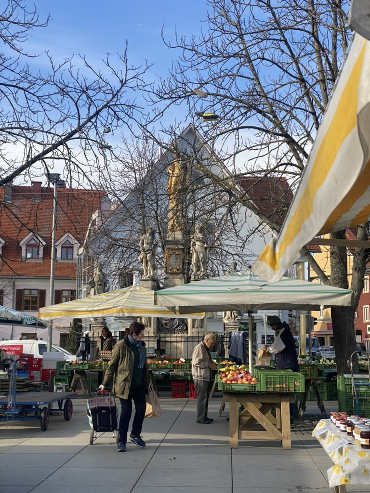
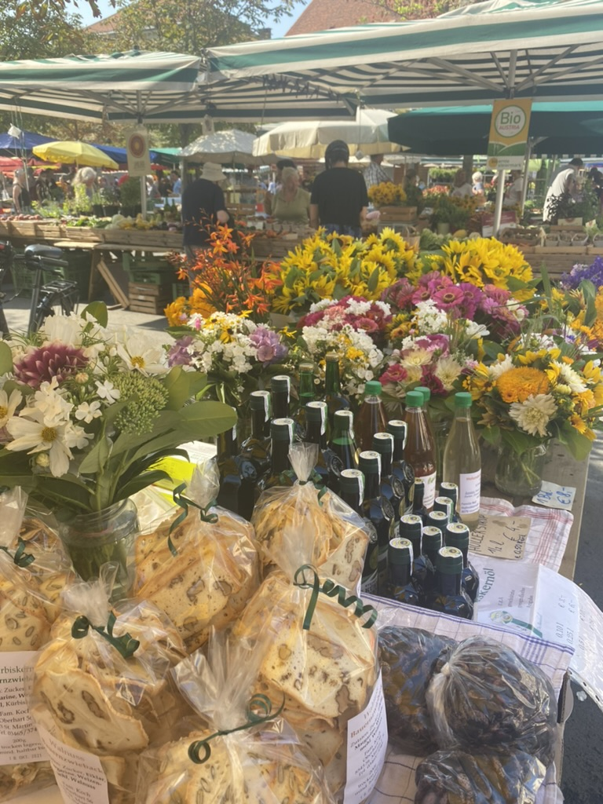
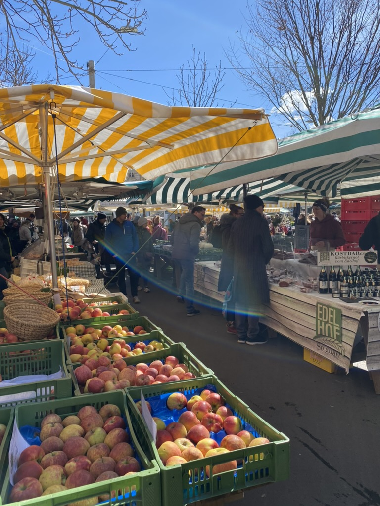
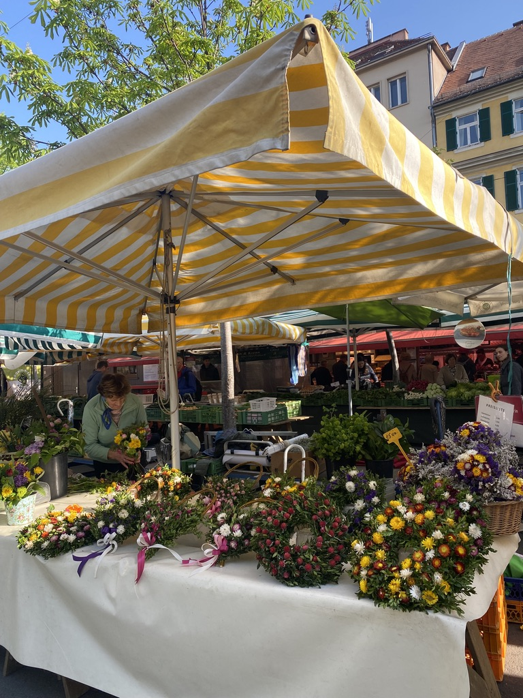
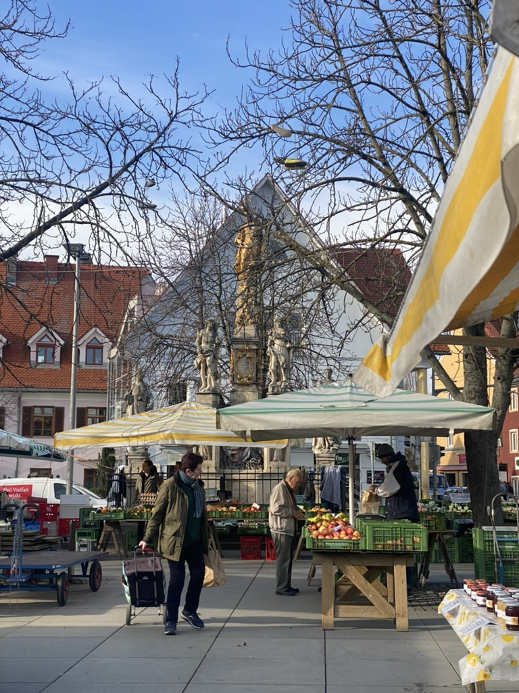
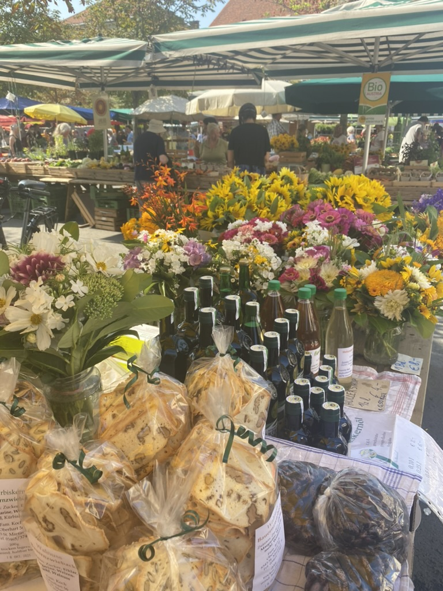
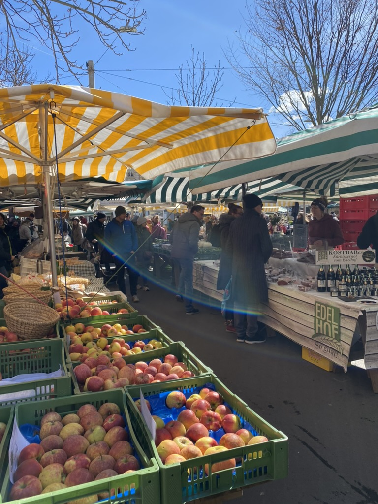
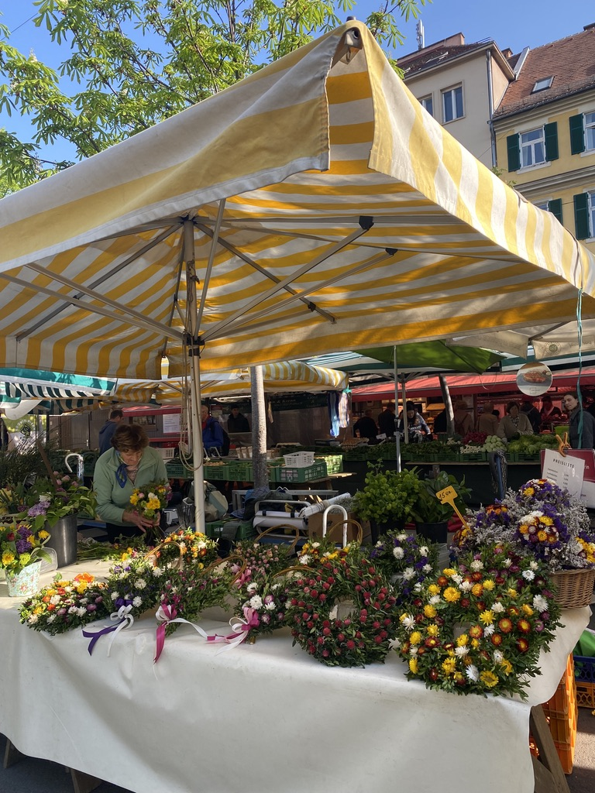

Herbst in Graz - Die Bauernmärkte
 









Die Bauernmärkte haben in Graz eine lange und lebendige Tradition und sind im Herbst, wenn die Erntezeit in vollem Gange ist, besonders reizvoll. Sie sind nicht nur Orte, um frische, regionale Produkte einzukaufen, sondern auch soziale Treffpunkte, an denen man schlendern, verweilen und kleine Gespräche mit den Standler:innen führen kann. Die Atmosphäre ist geprägt von den Farben und Düften der Saison, von frischem Obst und Gemüse bis hin zu Kürbissen und regionalen Spezialitäten.
Meine zwei Lieblingsmärkte sind der am Kaiser-Josef-Platz und der auf dem Lendplatz. Der Kaiser-Josef-Platz-Markt besticht durch seine zentrale Lage und das breite Angebot, während der Lendplatz-Markt ein jüngeres, alternatives Publikum anzieht und oft auch Live-Musik oder kleine Essensstände bietet. Aber auch der Geidorfplatz und der Hasnerplatz sowie viele weitere lokale Märkte in den verschiedenen Stadtteilen bieten eine Fülle an frischen Produkten direkt vom Erzeuger an. Es ist super schön zum Einkaufen für die Wochenration und auch einfach, um durch die Reihen zu schlendern, das bunte Treiben zu beobachten und die herbstliche Stimmung aufzusaugen. Die Bauernmärkte sind ein authentisches Stück Grazer Lebensgefühl.
Fun-Facts zu den Bauernmärkten in Graz:
- Tägliche Frische: Viele Bauernmärkte in Graz, wie der am Kaiser-Josef-Platz oder am Lendplatz, finden an Werktagen fast täglich statt, was eine kontinuierliche Versorgung mit frischen Produkten gewährleistet.
- Regionale Vielfalt: Die Märkte bieten eine beeindruckende Auswahl an saisonalen und regionalen Produkten direkt von steirischen Bauernhöfen, von Obst und Gemüse bis zu Käse, Brot und Fleisch.
- Sozialer Treffpunkt: Über das reine Einkaufen hinaus sind die Märkte wichtige soziale Treffpunkte, wo sich Menschen treffen, austauschen und die lokale Kultur erleben können.
- Tradition seit Jahrhunderten: Die Geschichte der Bauernmärkte in Graz reicht Jahrhunderte zurück, was ihre tiefe Verankerung in der Stadttradition unterstreicht.